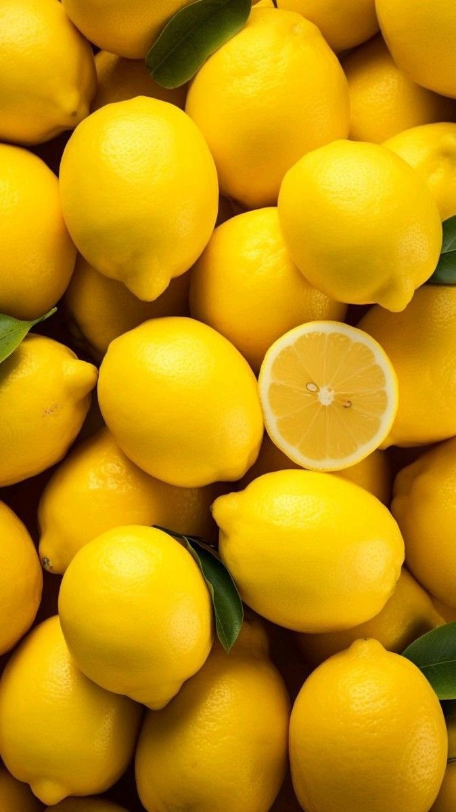

Lemon Cultivation Guide

1. Climate & Soil
Requires warm and dry climate; frost-free regions are ideal.
Light to medium loamy soils with good drainage and pH 5.5–7.5.
2. Land Preparation & Planting
Deep plowing followed by harrowing to prepare the field.
Pit size: 60x60x60 cm filled with topsoil, FYM, and neem cake.
Spacing: 4.5m x 4.5m or 6m x 6m depending on variety.
Planting season: June–August or February–March (depending on region).
3. Irrigation
Regular irrigation during dry spells, especially during flowering and fruit development.
Drip irrigation recommended for efficient water use.
4. Fertilizer Application
Apply 15–20 kg FYM/pit annually.
Per plant annually: Urea (400g), SSP (600g), MOP (200g) in 2–3 split doses.
Micronutrients like Zn and Fe may be sprayed if deficiency appears.
5. Pest & Disease Control
Pests:
Citrus psylla, leaf miner, black fly — control with neem-based pesticides and insecticides.
Diseases:
Gummosis, citrus canker — managed with Bordeaux paste and copper fungicides.
6. Investment Breakdown (Per Acre)
Input
Estimated Cost (INR)
Planting Material (500–600 saplings)
₹10,000 – ₹15,000
FYM & Fertilizers
₹6,000 – ₹8,000
Pesticides/Fungicides
₹3,000 – ₹5,000
Labor & Irrigation
₹7,000 – ₹10,000
Total Investment
₹26,000 – ₹38,000 per acre
7. Yield & Harvesting
First yield from 3rd year onward.
Average yield: 8–10 tons per acre annually after full bearing starts.
8. Market Price & Returns
Average market rate: ₹15 – ₹30 per kg.
Gross return: ₹1,20,000 – ₹3,00,000 per acre.
Net profit: ₹90,000 – ₹2,60,000 per acre.